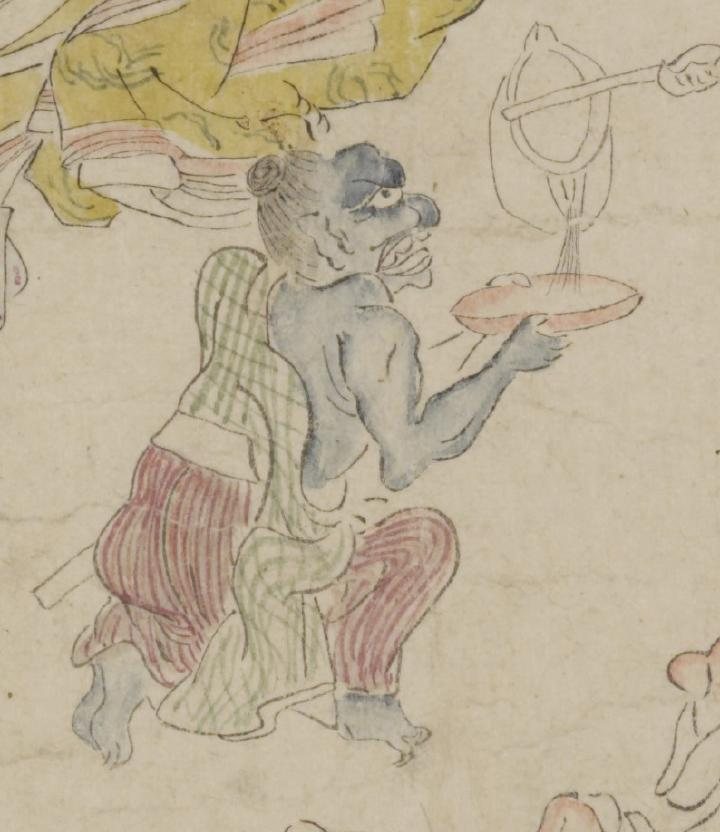

青い肌の鬼。頭は歪み、髪を後頭部で髷に結っている。額は出っ張り、目玉と耳が大きい。開いた口に大きな歯が覗いている。足指には鋭い爪が生えているようである。緑色の格子柄の着物を肩肌脱ぎにし、赤い縞模様の袴を着けている。片膝立ちになって両手で盃を持ち、銚子から酒を受けている。
著作者：坂本弥一郎徳定／出典：親書誌：U426_nichibunken_0080：伊吹山酒呑童子絵巻；イブキヤマシュテンドウジエマキ／日付：2007／資源識別子：U426_nichibunken_0080_0007_0008
Copyright (c)2010- International Research Center for Japanese Studies, Kyoto, Japan. All rights reserved.